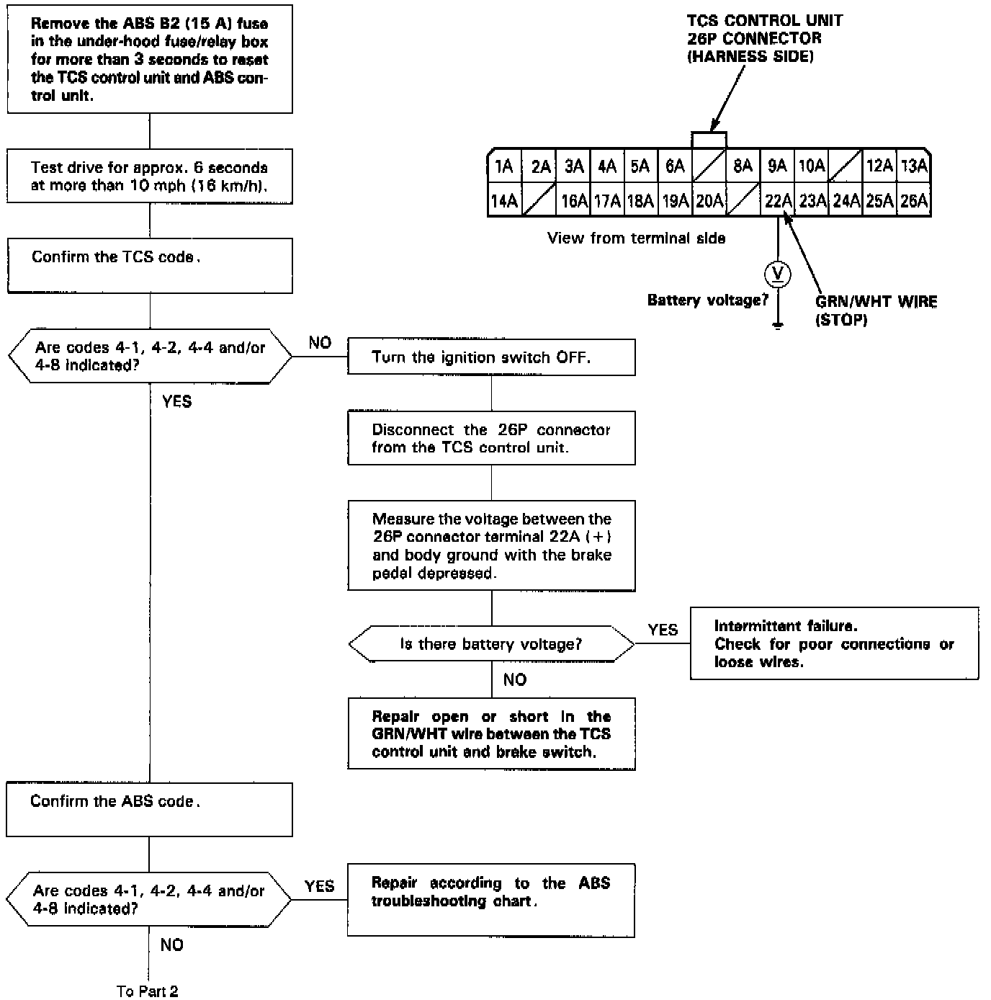
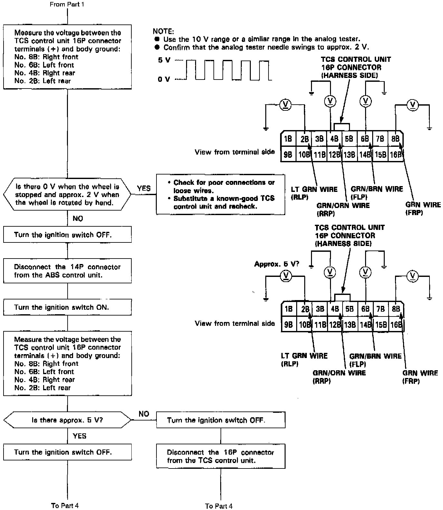
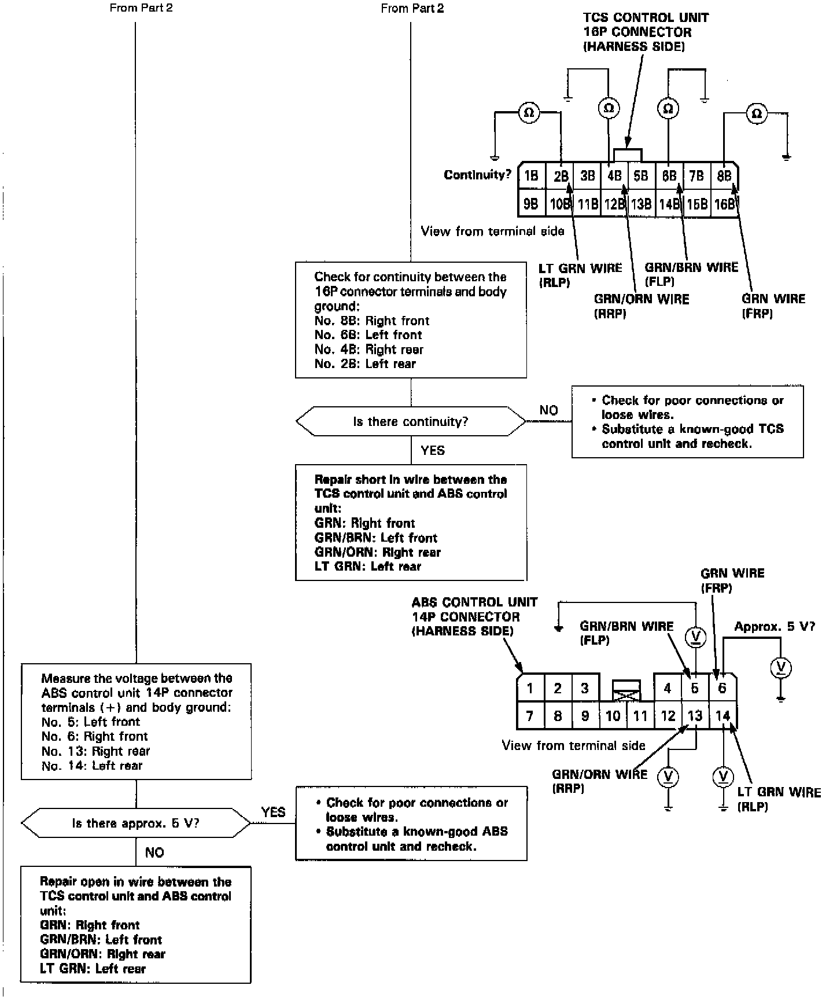

DTC 4-4



NOTE:
- The TCS indicator light comes on if any wheel speed signal from the ABS control unit stops for more than three seconds when either the left or right rear wheel speed is 10 mph (16 km/h) or more.
- If the wheel speed signals from the ABS control unit are abnormal, the TCS control unit makes the TC FC signal to the ECM or PCM 0 Volts. The ECM or PCM then indicates PGM-FI system code 36. After the repair is completed, reset the ECM or PCM.